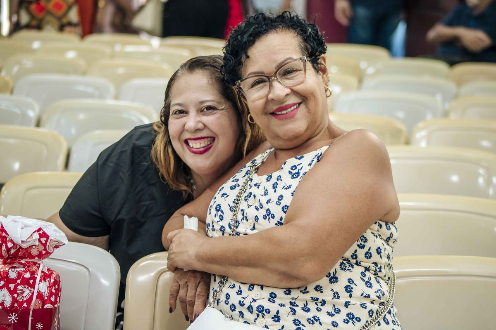

Desde 1989 adoramos a Deus, crescemos na Palavra e servimos pessoas. Há um lugar reservado para você aqui.
Tudo começou num sábado de janeiro de 1989, num encontro de sete pessoas na casa do Pr. Jorge Henrique e Marli. De lá pra cá, atravessamos o "Barraco de Cristo", a "Caixa de Fósforos" e uma reconstrução feita sem dinheiro em caixa, mas com muita fé. Somos uma igreja viva e relevante, comprometida em fazer diferença num mundo carente da graça de Deus.
“Glorificar a Deus, proclamando o Evangelho de Jesus Cristo, fazendo discípulos frutíferos e multiplicadores no poder do Espírito Santo.”Conheça nossa história

Cinco compromissos que orientam tudo o que fazemos, desde os primeiros dias da igreja.
Celebrar a presença de Deus.
Incorporar a família de Deus.
Ensinar o povo de Deus.
Comunicar a Palavra de Deus.
Demonstrar o amor de Deus.
Conheça algumas das frentes onde a igreja vive seu propósito, semana após semana.
 Ministério Jovem
Ministério Jovem Ministério Infantil
Ministério Infantil Famílias e Casais
Famílias e Casais Missões
Missões